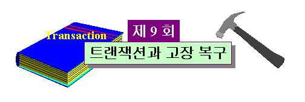

 |
||||||||||||||||||||||||||||||||||||||||||||||||||||||||||||||||||||||||||||||||||||||||||||||||||||||||||||||||||||||||||||||||||||||||||||||||||||||||||||||||||||||||||||||||||||||||||||||||||||||||||||||||||||||||||||||||||||||||||||||||||||||||||||||||||||||||||||||||||||||||||||||||||||||||||||||||||||||||||||||||||||||||||||||||||||||||||||||||||||||||
목 차
|
시작하기전에....제 9 회 "트랜잭션과 고장복구" 강의는 데이터베이스를 접근하는 실행 프로그램인 트랜잭션의 성질들과 상태에 대한 개념을 학습하고 이를 중심으로 기초적인 복구 기법을 다룹니다. 수강생 여러분들은 다음 내용을 파악하면서 강의에 임하길 바랍니다.
|
|||||||||||||||||||||||||||||||||||||||||||||||||||||||||||||||||||||||||||||||||||||||||||||||||||||||||||||||||||||||||||||||||||||||||||||||||||||||||||||||||||||||||||||||||||||||||||||||||||||||||||||||||||||||||||||||||||||||||||||||||||||||||||||||||||||||||||||||||||||||||||||||||||||||||||||||||||||||||||||||||||||||||||||||||||||||||||||||||||||||
사용자 견점에서 볼 때 데이터베이스에 대한 연산들의 모임이 단일의 작업 단위로 자주 고려된다. 예를 들어, 현금 지급기를 통하여 A 예금 구좌로부터 B 예금 구좌로 자금 이체를 행할 경우 고객은 이 연산을 간단한 단일 작업으로 간주하지만 데이터베이스 시스템 내에서는 A 예금 구좌로부터 예금액을 읽어와서 이체되는 액수를 뺀 다음 데이터베이스에 재기록한 후 B 에금구좌의 예금액을 읽어와서 그 액수를 더한 후 다시 데이터베이스에 재기록하는 여러개의 연산들로 이루어진다. 트랜잭션(transaction)이란 이와 같이 단일의 논리적 작업을 구성하는 절차적으로 구성된 연산들의 모임을 말한다. 트랜잭션은 논리적으로 볼 때 단일 작업이기 때문에 작업 수행도중에 시스템 고장 등으로 인하여 작업 수행이 중단되면 데이터의 불일치 문제가 발생하며 이러한 데이터 불일치 문제는 데이터베이스의 종류에 따라 매우 심각한 상황을 초래할 수도 있다. 본 강의에서는 트랜잭션에 대한 구체적인 개념을 소개하고, 앞에서 설명한 트랜잭션 수행 실패에 따른 데이터 불일치 문제을 예를 들어 자세히 소개한 후 이 문제를 해결하기 위한 트랜잭션 복구(transaction recovery) 기법에 대하여 소개하도록 한다. 1. 데이터의 판독과 기록 연산
SQL의 select 연산은 데이터베이스로부터 저장된 데이터를 읽어오는 판독(read) 연산을 수반하며 insert 연산과 update 연산은 데이터베이스로의 데이터 기록(write) 연산을 수반한다. 데이터베이스를 대상으로 하는 데이터의 기록과 판독 연산은 주기억 장치와 관련되며 데이터베이스 저장 장치(디스크)의 접근 횟수를 감소시키는 등의 효율성을 위해 버퍼링(buffering)을 도입한다. 버퍼링과 관련한 데이터의 기록과 판독 과정에 대하여 좀 더 상세히 살펴보기로 하자. 1.1 데이터의 판독 과정데이터 블록(block)은 저장 장치로부터 데이터를 입력하고 출력하는 단위로서 한 개이상의 레코드들로 구성된다. 이와 같이 블록을 데이터의 입촐력 단위로 하는 이유는 레코드와 같이 작은 단위의 입출력은 빈번한 기록과 판독으로 인하여 저장 장치의 접근 횟수가 많아짐에 따라 판독과 기록 속도가 느려지기 때문이다. 레코드의 판독할 때마다 저장 장치 접근이 요구된다면 한 레코드를 판독한 후에 또 다른 레코드를 판독할 때 두 번의 저장 장치 접근이 요구되는데 레코드는 대부분 저장 장치에서 순차적으로 위치할 확률이 높다. 따라서 첫번째 레코드를 판독할 때 두 번재 레코드를 포함하여 한꺼번에 읽어 온다면 두 번째 레코드 판독을 위한 저장 장치 접근이 절약되므로 저장 장치의 접근 횟수가 절약되게 된다. 이러한 이유로 여러개의 레코드를로 이루어진 블록 단위로 저장 장치의 접근이 이루어진다. 저장 장치로부터 읽혀진 블록은 주기억장치에 마련된 입력 버퍼(input buffer)로 입력된다. 데이터 항목 A의 값을 지역 변수 a로 읽는 데이터 판독 명령을 read(A,a)라 할 때 이 명령을 수행하는 과정이 그림 9-1에 제시되며 그 절차는 다음과 같다.
1.2 데이터의 기록 과정데이터의 기록은 먼저 주기억 장치의 출력 버퍼로 이루어진다. 출력 버퍼가 다 차게되면 그 때서야 버퍼에 있는 내용을 저장 장치의 해당 블록에 기록한 후 다음 출력을 위해 출력 버퍼를 비운다. 일반적으로 출력 연산으로 인해 출력 버퍼가 다 채워질 때까지 저장 장치의 기록은 일어나지 않는다(사실 상 출력 버퍼가 다 채워지지 않더라도 강제 출력이나 파일의 close 등으로 인하여 저장 장치의 기록이 일어나기도 한다). 이렇게 함으로써 저장 장치의 접근 횟수를 절감시킬 수 있다. 지역 변수 a의 값을 데이터 항목 A로 기록하는 데이터 기록 명령을 write(A,a)라 할 때 이 명령을 수행하는 과정이 그림 9-2에 제시되며 그 절차는 다음과 같다.
2. 트랜잭션
2.1 트랜잭션 개념트랜잭션(transaction)은 다양한 데이터 항목들을 접근하거나 갱신하는 프로그램 실행의 단위이다. 트랜잭션은 대개 SQL과 같은 고수준 데이터조작어나 C, Pascal, COBOL 등의 프로그래밍 언어로 작성된 사용자 프로그램의 실행에서 비롯되며 이 프로그램은 수행 연산들은 begin transaction과 end transaction 형태의 문장이나 혹은 이들의 역할을 수행하는 함수 호출에의해 에워싸이게 된다. 데이터 무결성(data integrity)을 보장하기 위해 데이터베이스 시스템은 다음의 트랜잭션 성질을 유지해야 한다. 트랜잭션 성질(Transaction Properties)1. Atomicity(원자성). 트랜잭션의 모든 연산 수행 결과가 데이터베이스에 반영되거나 혹은 전혀 반영되지 않거나 해야하는 성질이다. 2. Consistency(일관성). 트랜잭션이 실행을 성공적으로 완료하면 데이터베이스는 모순이 없이 일관성이 보존된 상태이어야 하는 성질이다. 3. Isolation(격리성). 다수의 트랜잭션이 동시에(concurrently) 실행될 수 있다하더라도 한 트랜잭션의 연산 수행의 중간 결과를 다른 트랜잭션이 이용하지 못하도록 함으로써 각 트랜잭션이 다른 트랜잭션들이 동시에 실행되고 있는 환경과는 무관하게 데이터베이스의 일관성이 유지되도록 하는 성질이다. 4. Durability(영속성). 트랜잭션이 성공적으로 완료한 후에는 이 트랜잭션에 의해 이루어진 데이터베이스의 변경은 시스템 고장이 발생한다 하더라도 유지되어야 하는 성질이다. 위의 4가지 성질을 각 성질에 대한 영문 첫 자를 따서 ACID 성질이라 불리운다. ACID 성질의 예ACID 성질의 이해를 돕기 위한 예를 들어보기로 하자. 은행 예금 구좌 데이터베이스에 예금 구좌 A와 B에 각각 100,000 원과 200,000 원이 각각 저장되어 있다고 가정하고 이때 예금 이체 트랜잭션 T를 이용하여 A 구좌로부터 50,000원을 B구좌로 이체하려 한다고 가정하자. 이때의 트랜잭션은 T는 다음 표 9-1과 같이 정의된다.
트랜잭션 T를 중심으로 ACID 성질을 구체적으로 살펴보도록 하자. 1. Consistency트랜잭션 T의 실행 전의 A구좌와 B구좌의 금액은 각각 100,000 원과 200,000 원이고, 실행 후의 금액은 각각 50,000 원과 250,000 원으로 트랜잭션 T의 실행 전후의 A 예금 구좌 금액과 B 예금 구좌 금액의 합(A+B)은 항상 300,000 만원으로 변함이 없어야 한다. 이 성질이 바로 트랜잭션 T에 대한 데이터 일관성이다. 만일 이러한 성질이 보장 되지 않는 다면 예금 이체 연산은 은행 업무에서 심각한 오류를 발생시킴을 주시하자. 각 트랜잭션에 대한 일관성을 보장하는 것은 트랜잭션을 프로그램하는 응용 프로그래머의 책임이다. 일관성을 보장하는 작업은 '제 3 회 관계형 데이터베이스와 무결성 제약 조건'에서 이미 언급했듯이 제약조건의 자동 검사에 의해 이루어진다. 2. Atomicity 트랜잭션 T가 수행이 되지 않아서 데이터베이스의 변경이 없거나 아니면 수행이 완료되어 모든 연산의 수행 결과가 데이터베이스에 반영되었다면, 이 두 경우 모두 A구좌의 금액과 B구좌 금액의 합(A+B)이 300,000 원이되어 일관성을 유지하게 된다. 그러나, 트랜잭션 T에서 write(A,a) 연산이 수행되어 A 구좌 금액의 변경된 금액인 50,000 원이 바로 데이터베이스에 반영된 후 write(B,b) 연산이 수행되기 이전에 트랜잭션의 실행 중단(transaction failure)가 발생했다고 하자(이러한 고장은 전력 공급의 중단, 하드웨어 고장, 소프트웨어의 오류 등으로 발생할 수 있다). 이러한 트랜잭션 실행 중단은 흔히 있을 수 있는 일로서 이 때의 데이터베이스 상태는 A 구좌 금액이 50,000 원 B 구좌 금액이 200,000 원으로 두 구좌의 합이 300,000 원이 아닌 250,000 원이 되어 50,000 원이 행방불명된 상태로 일관성이 유지되지 못한 상태이다. 이와 같이 일관성이 유지되지 못한 상태를 불일치 상태(inconsistency state)라 한다. 트랜잭션 T의 원자성(atomicity)을 보장하기 위해서는 T의 모든 연산 수행 결과가 데이터베이스에 반영되거나 혹은 전혀 반영되지 않거나 해야하는데 이 경우에는 데이터베이스 갱신 연산 중 write(A,a) 연산의 수행 결과는 반영되었지만 write(B,b) 연산의 수행결과는 반영되지 않음으로해서 T의 원자성이 보존되지 못한 상태이다. 트랜잭션의 원자성이 보존되지 못하면 트랜잭션의 일관성이 깨지게 되며 따라서 데이터베이스의 불일치 상태를 야기하게 된다. 만일 트랜잭션 T가 성공적으로 모든 연산들을 실행했다 하더라도 그 결과가 항상 데이터베이스로 반영되는 것은 아니다. 그 이유는 트랜잭션의 마지막 데이터 기록 연산이 성공적으로 종료되었다하더라도 데이터의 기록 연산은 앞에서 설명한데로 일차적으로 버퍼에 반영되기 때문에 이 버퍼의 내용이 최종적으로 데이터베이스의 해당 블록으로 반영되지 못한 상태에서 장애(failure) 발생으로 인하여 작동이 중단되면 데이터베이스는 불일치 상태에 있을 수 있기 때문이다. 트랜잭션 실행에서 일부 연산들이 수행되고 나머지 연산들이 수행되지 못한 상태에서 중단된 경우에는 데이터베이스의 상태를 그 트랜잭션의 실행이전 상태로 되돌려야 한다. 그러나 만일 트랜잭션이 성공적으로 완료 되었다면 앞의 예처럼 데이터베이스의 일관성을 보장 할 수 없기 때문에 데이터베이스의 상태를 트랜잭션의 실행 완료 상태로 변경해야 한다. 이와 같이 데이터베이스의 상태를 트랜잭션의 실행 이전 상태나 실행 완료 상태로 변경하는 작업을 실행함으로써 트랜잭션의 원자성을 보장하는 작업을 트랜잭션 고장 복구(transaction failure recovery)라 한다. 트랜잭션 고장 복구는 데이터베이스 기록 연산마다 연산 이전의 데이터 항목들의 값들과 연산 이후의 값들을 저장 장치 파일(이를 로그 파일(log file)이라 함)에 기록하고(이를 로깅(logging)이라 함), 트랜잭션 고장(transaction failure) 발생시 이 파일을 이용하여 트랜잭션의 각 연산에 관련된 각 데이터 항목들의 값을 트랜잭션 연산 수행 이전의 값이나 혹은 수행 이후의 값으로 변경하여 데이터베이스에 반영함으로써 이루어진다. 사실상 트랜잭션 고장 복구 방법은 이러한 방법 외에도 여러가지 존재한다. 트랜잭션 고장 복구는 데이터베이스 시스템 구성요소인 트랜잭션 관리 구성요소(transaction-management component)에 의해 수행된다. 3. Durability 앞에서 설명한 트랜잭션 T가 성공적으로 실행 완료되고 트랜잭션을 실행한 사용자가 예금 이체가 수행되었음을 알리는 메시지를 접했을 때 어떠한 시스템 고장이 발생하더라도 트랜잭션 수행의 최종 결과 데이터는 손상되지 말아야 한다. 이 성질이 바로 트랜잭션의 영속성(durability)이다. 영속성은 트랜잭션이 성공적으로 완료될 때 비록 시스템 고장이 발생하더라도 데이터베이스 상에 수행된 모든 갱신 상태가 트랜잭션 수행 완료 후에도 지속됨을 보장한다. 트랜잭션에 의해 수행된 갱신들이 트랜잭션 완료 이전에 디스크로 기록되거나 혹은 고장 후 데이터베이스 시스템이 다시 실행될 때 트랜잭션에 수행되어 디스크에 기록된 갱신 정보들이 갱신 내용들을 데이터베이스로 정확히 반영할 수 있을 정도로 충분한 정보라면 영속성을 보장할 수 있다. 영속성의 보장은 일반적으로 복구 관리 구성요소(recovery-management component)라 불리우는 데이터베이스 시스템 구성요소가 담당한다. 트랜잭션 관리 구성요소와 복구관리 구성요소는 서로 밀접하게 관련되기 때문에 본 강의에서 이 방법들에 대하여 다룰 것이다. 4. Isolation 비록 일관성과 원자성이 각 트랜잭션에 대하여 확보된다 하더라도 다수의 트랜잭션이 동시에 실행되는 환경에서는 트랜잭션의 연산들이 번갈아가면서 실행되기 때문에 불일치 상태를 유발할 수 있다. 이를 설명하기 위해 다음의 두 트랜잭션 T1과 T2를 예로 들어보자. 여기에서 T1은 A구좌로부터 50,000 원을 B구좌로 이체시키는 트랜잭션인 반면 T2는 B구좌로부터 A구좌로 70,000 원을 이체시키는 트랜잭션이라고 하자. 이때 트랜잭션 T1과 T2의 코드는 다음 표 9-2와 같다.
T1 실행된 다음 T2가 실행되든 혹은 T2가 실행된 다음 T1이 실행되든 두 트랜잭션이 순차적으로 처리된 후의 두 구좌 금액의 합(A+B)은 실행되기 전의 합인 300,000 원이 되어야 한다. 그러나 트랜잭션 T1과 T2가 동시성 실행에 의해 다음 표9-3의 순서로 처리된다고 가정하자.
위의 실행 순서에 따라 두 트랜잭션 실행 후의 A구좌와 B구좌의 금액은 각각 50,000 원과 180,000 원으로 두 구좌 금액의 합이 230,000 원이 되어 불일치 상태에 이르게 된다. 이러한 불일치 상태의 원인은 T2가 데이터 항목 B의 값을 읽어서 70,000 원을 빼서 130,000 원으로 갱신하고 70,000 원을 데이터 항목 A에 더하여 170,000 원으로 갱신한 후 트랜잭션 T1의 read(A,a) 연산이 실행되었어야 하는데 70,000 원을 데이터 항목 A에 더하여 170,000 원으로 갱신하기 이전에 T1의 read(A,a) 연산이 실행됨으로해서 발생된 것이다. 즉, T2가 에금구좌 A를 갱신하기 전까지 T1이 예금구좌 A를 판독하지 말아야 하는데도 불구하고 데이터 항목 A의 중간 값을 읽음으로해서 발생된 문제이다. 격리성(isolation)을 보장하기 위해서는 두 개의 트랜잭션이 동시적으로 실행된다 하더라도 두 트랜잭션 실행 완료 후의 데이터베이스 상태가 트랜잭션이 T1이 성공적으로 종료된 다음 T2가 완료된 상태가 되도록 하거나 혹은 T2가 성공적으로 종료된 다음 T1이 완료된 상태와 같은 결과를 갖도록 함으로써, 즉, 데이터베이스 상태가 두 트랜잭션이 순차적으로 실행된 것과 같은 상태가 되도록 함으로써 보장된다. 격리성은 데이터베이스 시스템의 동시성 제어 구성요소(concurrency- control component)에 의해 보장된다. 2.2 트랜잭션 상태성공적으로 실행을 종료하지 못한 트랜잭션을 중단된 트랜잭션(aborted transaction)이라 한다. 중단된 트랜잭션은 원자성(atomicity)을 보장하기 위해서 이 트랜잭션 실행 중 이루어진 데이터베이스 변경을 실행 이전 상태로 환원해야 한다. 이와 같이 중단된 트랜잭션에 의해 변경된 데이터베이스를 실행이전 상태로 되돌리는 연산을 트랜잭션의 복원(rollback)이라 한다. 성공적으로 실행을 완료한 트랜잭션을 완료된 트랜잭션(committed transaction)이라 한다. 갱신 연산을 수행한 완료된 트랜잭션은 데이터베이스를 일관성있는 새로운 상태로 변경하며, 시스템 고장이 발생하더라도 이 상태는 영속적이어야 한다. 데이터베이스 갱신 연산을 포함하는 트랜잭션이 완료(commit)되면 이 트랜잭션의 수행 이전 상태로 데이터베이스를 환원시킬 수 없다. 데이터베이스를 접근해서 갱신 연산을 수행하는 트랜잭션은 다음의 5가지 상태 중 하나에 존재하게 된다. 그림 9-3은 트랜잭션이 한 상태에서 다른 상태로 전이되는 관계를 나태낸다.
그림 9-3에서와 같이 트랜잭션이 시작될 때 그 트랜잭션은 실행(active) 상태에 존재하게 된다. 그 트랜잭션이 마지막 명령을 실행하면 이 트랜잭션은 실행 상태에서 부분완료(partially committed) 상태로 전이된다. 이 시점에서 트랜잭션 실행은 종료되지만 출력 부분이 버퍼에 남아서 아직 디스크 상의 데이터베이스로 반영되지 못한 상태일 수 있기 때문에 이 상태에서 시스템 고장이 발생하면 버퍼의 내용들을 잃게되어 데이터베이스에 반영하지 못하므로 실패(failed) 상태로 전이될 가능성이 있다. 그러나, 트랜잭션이 부분완료인 상태에서 시스템 고장이 발생하더라도 트랜잭션이 완전히 수행된 후의 결과를 데이터베이스에 완전히 반영할 수 있는 충분한 갱신 정보를 데이터베이스 시스템이 갖게 되면 트랜잭션은 완료(committed) 상태로 전이된다. 한편, 트랜잭션은 실행 상태에서 하드웨어 오류나 논리적 오류 등으로 인하여 정상적인 실행을 더 이상 진행할 수 없게 되면 실패(failed) 상태로 전이된다. 이러한 트랜잭션은 복원(rollback)되어야 하며, 복원이 종료되면 그 트랜잭션은 중단(abort) 상태로 전이된다. 이 상태에서 트랜잭션은 다음의 두가지 중의 한 가지 방법에 의해 처리될 수 있다. 표 9-1에서 예금 구좌 A와 B가 ACCOUNT 릴레이션의 속성 ACNT 의 값이고 예금 금액이 BALANCE 속성 값이라 한다면 표 9-1 트랜잭션 T를 상태를 고려하여 SQL 문으로 작성한 예가 다음 표 9-4에서 제시된다.
3. 복구 시스템
트랜잭션은 디스크 고장, 전력 공급 중단, 소프트웨어 오류, 하드웨어 오류 등으로 인하여 실패 상태로 전이될 수 있다. 이러한 경우에 디스크로 반영되어야 할 버퍼의 내용들을 잃게 되는데 데이터베이스 시스템은 이러한 상태에 대비하여 트랜잭션의 원자성(atomicity)과 연속성(durability)을 보장하기 위해 미리 조치를 취해야 한다. 3.1 저장 장치 타입의 분류저장장치는 접근 속도, 저장 용량, 고장에 따른 데이터의 손실 정도에 따라 다음과 같이 분류된다. 1. 휘발성 저장 장치(volatile storage) : 시스템 장애가 발생하면 저장된 내용들이 손실되어 복구할 수 없는 성질을 갖는 저장장치이다. 휘발성 저장 장치의 예로는 주기억장치, 케시 메모리, 레지스터 등으로 접근 속도는 직접 접근(direct access)이 가능하기 때문에 매우 빠른 반면 저장 용량은 비휘발성 저장장치에 비해 매우 적은 편이다. 2. 비휘발성 저장 장치(nonvolatile storage) : 시스템 장애가 발생하더라도 이 저장 장치에 저장된 데이터는 잘 손실되지 않는다. 그러나, 저장 매체의 고장이나 손상 등으로 인하여 저장된 데이터의 손상이 발생할 수 있다. 디스크나 자기 테이프 등과 같은 보조 기억 장치들이 이 종류에 속한다. 이중 디스크는 데이터베이스 저장을 위해 사용되면 자기 테이프는 데이터의 백업용으로 이용된다. 비휘발성 저장 장치는 휘발성 저장 장치에 비해 저장 용량은 큰반면 접근 속도가 느린편이다. 3. 영구 저장 장치(stable storage) : 영구 저장 장치는 어떠한 시스템 장애가 발생하더라도 데이터 손실이나 손상이 결코 발생하지 않는 저장 장치이다. 사실 영구 저장 장치는 실질적으로 존재하지 않으며 구현상 불가능하다. 따라서, 데이터의 손실을 최소화 시키는 방법을 이용하여 영구 저장 장치를 구현한다. 예를 들어 독립적으로 작동하는 여러개의 비휘발성 저장 장치들을 이용하여 동일한 내용의 데이터를 기록하게 되면 이 저장 장치들 중 몇 개가 손상된다 하더라도 나머지 온전한 저장 장치를 사용하여 복구할 수 있다. 3.2 로그 이용 복구(Log-Based Recovery)데이터베이스 변경을 기록하기 위해 가장 널리 사용되는 구조는 로그(log) 파일이다. 일반적으로 로그 파일은 트랜잭션 복구에 필수적이기 때문에 손상되어서는 않되며 따라서 영구 저장 장치(stable stroage)에 저장한다. 로그는 로그 레코드(log record)들로 이루어지며 데이터베이스의 갱신 연산에 대한 기록을 유지한다. 여러 가지 타입의 로그 레코드들이 존재하며 이 중 갱신 로그 레코드(update log record)는 하나의 데이터베이스 기록 연산에 대한 정보를 포함하여 다음의 필드를 갖는다.
갱신 로그 레코드 이외에도 트랜잭션 실행동안 중요한 사건을 기록하기 위한 다음과 같은 타입의 로그 레코드들이 존재한다.
트랜잭션 Ti가 처음 시작될 때 데이터베이스 시스템은 로그 파일에 <Ti start> 로그 레코드를 먼저 기록한다음 Ti의 첫 번째 연산을 수행하기 시작한다. 트랜잭션 Ti가 데이터 항목 Xj의 값 V1을 V2로 갱신하는 기록 연산을 수행할 때마다 데이터베이스 시스템은 <Ti, Xj, V1, V2> 로그 레코드를 로그 파일에 먼저 기록한 후 데이버베이스 갱신을 수행한다. 트랜잭션 Ti가 마지막 연산을 수행한 후 로그 파일에 <Ti commit> 로그 레코드를 삽입한다. 만일 시스템 고장으로 인하여 시스템 중단이 발생한후 시스템 고장 복구 후 다시 시작할 때 데이터베이스 시스템은 맨처음 로그 파일을 조사한다. 이때 트랜잭션 Ti에 대하여 만일 <Ti start> 로그 레코드가 존재하고 <Ti commit> 로그 레코드가 존재하지 않는다면 이 트랜잭션은 연산들이 완전히 수행되지 못하고 실패한 것이기 때문에 로그 파일로부터 <Ti, Xj, V1, V2> 로그 레코드들을 찾아서 데이터 항목 Xj의 값을 수행이전 값인 V1으로 데이터베이스에 기록함으로써 트랜잭션을 abort 상태로 복구시킨다. 데이터베이스 상태를 트랜잭션 Ti의 수행이전 상태로 되돌리는 연산을 UNDO(Ti) 연산이라 한다. UNDO(Ti)=UNDO(...UNDO(UNDO(UNDO(Ti)))...)임을 명심하자. 이때 트랜잭션 Ti에 대하여 만일 <Ti start> 로그 레코드가 존재하고 <Ti commit> 로그 레코드도 존재한다면 이 트랜잭션은 부분완료(partially committed) 상태이므로(따라서 트랜잭션 실행시 버퍼의 내용이 데이터베이스로 반영되지 못했을 수도 있다) 로그 파일로부터 <Ti, Xj, V1, V2> 로그 레코드들을 찾아서 데이터 항목 Xj의 값을 수행이후 값인 V2로 데이터베이스에 기록함으로써 트랜잭션을 commit 상태로 복구시킨다. 데이터베이스 상태를 트랜잭션 Ti의 수행이후 상태로 되돌리는 연산을 REDO(Ti) 연산이라 한다. REDO(Ti)=REDO(...REDO(REDO(REDO(Ti)))...)임을 명심하자. 이렇게 로그 파일을 이용한 복구 방법을 로그 이용 복구(log-based recovery)라 하며 이 방식을 이용하는 대표적인 복구방법은 다음과 같다.
1. 테이터베이스 지연 갱신(Deferred Database Modification) 복구지연 갱신(deferred update) 방법은 트랜잭션의 기록 연산에 따른 데이터베이스의 변경을 트랜잭션이 종료될 때까지 지연시키는 방법으로 트랜잭션 실행 중의 기록 연산에 의한 변경 내용은 트랜잭션이 부분완료 될 때까지 로그 파일에 기록한다. 트랜잭션이 부분 완료될 때 비로서 로그 파일의 로그 레코드를 이용하여 데이터베이스를 변경하기 시작한다. 이 지연 갱신 방법을 단계적으로 설명하면 다음과 같다.
지연 갱신 방법은 단계 3의 <Ti commit> 로그 레코드를 로그 파일에 기록하기 이전에 단계 2에서 실패(failure)하면 이 상태에서 어떠한 데이터베이스 변경도 행해지지 않았기 때문에 UNDO 연산이 요구되지 않는다. 만약 단계 3에서 <Ti commit> 로그 레코드를 기록한 후 <Ti start> 로그 레코드와 <Ti commit> 로그 레코드 사이의 <Ti, Xj, V2> 로그 레코드를 검색하여 데이터 항목 Xj 값을 V2로 갱신하면서 데이터베이스를 갱신하는 과정 중에 실패가 발생하면 REDO 연산을 실행하여 복구시킨다. 갱신 지연 방법에서 REDO 연산은 데이터베이스 시스템이 다시 실행될 때 단계 3에서 처럼 로그 파일을 검색하여 <Ti start> 로그 레코드와 <Ti commit> 로그 레코드 사이의 <Ti, Xj, V2> 로그 레코드를 검색하여 데이터 항목 Xj 값을 V2로 갱신하여 데이터베이스의 갱신을 행함으로써 행해진다. 트랜잭션이 실행 중 중단(abort)되더라도 UNDO 연산이 요구되지 않음을 주시하자(수강생 여러분들은 이 이유를 레포트로 작성하여 e-mail로 제출하기 바랍니다. 레포트 작성시 작성 규칙을 참조할 것). 다음 표 9-5의 두 트랜잭션 T0과 T1을 예로 들어 보자.
표 9-5에서 두 트랜잭션 수행 이전의 데이터 항목 A, B, C의 값이 각각 100,000, 200,000, 150,000 이라 하자. 표 9-5에서 두 트랜잭션이 T0 가 먼저 수행된 후 T1 이 수행된다면 이때 지연 갱신 방법에 의해 데이터베이스 로그에 기록되는 과정이 다음의 표 9-6과 같다.
표 9-6에서 기록 순서는 로그 파일에 로그 레코드가 삽입되는 순서를 나타낸다. 표 9-6의 로그 기록 순서와 대응하는 데이터베이스 기록 순서가 표 9-7에서 제시된다.
2. 테이터베이스 즉시 갱신(Immediate Database Modification) 복구즉시 갱신(immediate update) 기법은 트랜잭션이 실행 상태에 있는 동안 데이터베이스 기록에 의한 데이터베이스 변경을 행할 수 있도록 하는 기법이다.실행(active) 상태에 있는 트랜잭션에 의해 기록된 데이터 갱신을 미완료 갱신(uncommitted modification)이라 한다. 즉시 갱신 기법에서는 갱신 연산에 의한 데이터베이스 변경에 앞서 먼저 이 연산에 대응하는 로그 레코드를 기록해야 한다. 데이터베이스 갱신이 트랜잭션 실행 중에 이루어지기 때문에 트랜잭션 수행 이전 상태로 복원하기 위해서 로그 레코드는 갱신 연산 수행 이전 값을 필요로 한다. 즉시 갱신 방법을 단계적으로 설명하면 다음과 같다.
즉시 갱신 방법에서의 UNDO 연산즉시 갱신 방법에서 UNDO(Ti) 연산은 로그 파일로부터 <Ti start> 로그 레코드 이후의 <Ti, Xj, V1, V2> 로그 레코드들을 검색하여 데이터베이스의 데이터 항목 Xj의 값을 연산 실행 이전의 값인 V1로 기록함으로써 행해진다. 즉시 갱신 방법에서의 REDO 연산또한, REDO(Ti) 연산은 로그 파일로부터 <Ti start> 로그 레코드와 <Ti commit> 로그 레코드 사이에 존재하는 <Ti, Xj, V1, V2> 로그 레코드들을 검색하여 데이터베이스의 데이터 항목 Xj의 값을 연산 실행 이후의 값인 V2로 기록함으로써 행해진다. 즉시 갱신 방법의 복구 과정즉시 갱신 방법의 복구 과정은 다음과 같다.
표 9-5의 두 트랜잭션 T0와 T1에서 T0 가 먼저 수행된 후 T1 이 수행된다면 이때 즉시 갱신 기법에 의해 데이터베이스 로그에 기록되는 과정은 다음의 표 9-8과 같다.
표 9-8에서 기록 순서는 로그 파일에 로그 레코드가 기록되는 순서를 나타낸다. 기록 순서가 2, 3, 6 번에 해당하는 갱신 로그 레코드들은 각각 T0의 write(A) 연산, T0의 write(B) 연산, 그리고 T1의 write(C) 연산에 대응하는 로그 레코드들이며 각 갱신 로그 레코드들은 대응하는 갱신 연산의 결과 값을 데이터베이스에 반영하기에 앞서 로그 파일에 기록된 로그 레코드들이다. 표 9-6의 갱신 로그 레코드와는 달리 표 9-8의 갱신 로그 레코드는 갱신 연산 수행 이전 값을 포함하고 있음을 주시하자. 표 9-8의 로그 기록 순서와 대응하는 데이터베이스 기록 순서가 표 9-9에서 제시된다.
표 9-9에서 기록 순서 4인 A=50000 을 기록한 후 시스템 고장이 발생했다고 하자. 시스템이 다시 실행될 때 로그에서는 <T0 start> 로그 레코드가 검색되고 <T0 commit> 로그 레코드가 검색되지 않으므로 UNDO(T0)을 수행하여 갱신 로그 레코드들인 <T0,A,100000,50000>, <T0,B,200000,250000>로부터 데이터 항목 A와 B를 각각 100,000 과 200,000 으로 환원 시킨다. 이번에는 표 9-9의 기록순서 9인 C=80000 을 실행 후 시스템 고장이 발생했다고 가정하자. 시스템이 다시 시작할 때 로그 파일을 참조하면 <T0 start> 로그 레코드와 <T0 commit> 로그 레코드가 존재하므로 트랜잭션 T0는 REDO 연산 대상이 된다. 그러나 트랜잭션 T1은 로그에서 <T1 start> 로그 레코드가 존재하지만 <T0 commit> 로그 레코드가 존재하지 않으므로 UNDO 연산 대상이 된다. 수강생 여러분들은 REDO(T0) 연산을 수행하는 과정과 UNDO(T1) 연산을 수행하는 과정을 레포트로 작성하여 e-mail로 전송하길 바랍니다. 3. 검사점(Checkpoint) 복구복구 방법에 있어서 지연 데이터베이스 갱신(deferred database modification) 기법과 즉시 데어터베이스 갱신(immediate database modification) 기법은 다음의 두가지 단점을 갖는다.
검사점(checkpoint) 복구 방법은 이러한 단점을 해결하기 위해서 제안되었다. 이 방법은 로그 이용 기법을 이용하며 지연 데이터베이스 갱신 방법이나 즉시 데이터베이스 갱신 방법 중의 하나를 이용할 수 있다. 이 방법을 이용하면서 다음의 순차적 연산들을 수행하는 검사점 연산을 수행한다.
시스템 고장이 발생한 후 시스템이 다시 가동되면 복구 관리자는 로그에 저장된 가장 최근의 <checkpoint L> 로그 레코드를 찾아 이 위치 이후의 로그 레코드들을 회복 대상으로 한다. 다음 그림 9-4는 검사점 기법에서 존재하는 트랜잭션들의 유형을 나타내고 있다.
위의 그림 9-4에서 c는 검사점을 나타내고 f는 시스템 고장 발생 시점을 나타낸다. 그림 9-4의 각 트랜잭션 유형에 대한 자세한 설명은 다음과 같다.
UNDO 연산 대상과 REDO 연산 대상의 결정 방법가장 최근의 검사점 로그 레코드 <checkpoint L>를 찾아서 다음의 방법으로 UNDO할 트랜잭션과 REDO할 트랜잭션을 결정한다.
UNDO 연산과 REDO 연산의 수행검사점 복구 방법에서 즉시 데이터베이스 갱신 방법을 사용할 경우의 UNDO 연산과 REDO 연산의 수행 방법에 대하여 설명하면 다음과 같다. UNDO 연산의 수행 방법앞의 방법을 이용하여 UNDO 해야할 트랜잭션과 REDO 해야할 트랜잭션이 결정되면 먼저 UNDO_List에 존재하는 모든 트랜잭션에 대해 로그에 기록된 역순으로 UNDO 연산을 수행한다. REDO 연산의 수행 방법REDO 연산은 REDO_List에 저장된 모든 트랜잭션을 대상으로 <checkpoint L> 레코드 이후의 로그 레코드를 차례로 검색하여 갱신 로그 레코드로부터 연산 수행 후의 값을 데이터 항목에 기록함으로써 행한다. 3.3 그림자 페이징(Shadow Paging) 기법그림자 페이징(shadow paging) 기법은 기본적으로 로그를 이용하지 않는다. 데이터베이스는 페이지(page)라는 일정한 크기의 믈록으로 나뉘어 디스크에 저장된다. 페이지라는 용어는 운영체제의 메모리 관리 기법에서 사용된 용어이다. 1에서 n까지의 페이지로 구성된 데이터베이스가 존재한다고 할 때 이 데이터베이스는 순서대로 디스크에 물리적으로 저장될 필요는 없다. 단지 데이터베이스의 i번째 페이지가 주어지면 이 페이지에 대응하는 페이지 블록을 디스크로부터 찾을 수 있어야 한다. 이 기능은 페이지 테이블(page table)이나 디렉토리(directory)를 이용하여 지원된다. 페이지 테이블은 데이터베이스 페이지에 대응하는 n개의 엔트리가 존재하고 i번째 엔트리는 i번째 페이지에 대응하는 디스크 상의 블록을 가리키는 포인터를 포함한다. 그림 9-5는 데이터베이스에 대한 페이지 테이블과 각 데이터베이스 페이지에 대응되는 디스크 상의 페이지와의 관계를 나타낸다.
그림자 페이징 기법은 트랜잭션이 실행되는 동안 현재 페이지 테이블(current page table)과 그림자 페이지 테이블(shadow page table)의 두 페이지 테이블을 이용한다. 트랜잭션이 시작될 때에는 이 두 페이지 테이블은 동일하다. 트랜잭션이 실행되는 동안 현재 페이지 테이블만 사용하고 그림자 페이지 테이블은 사용하지 않는다. 트랜잭션이 write 연산을 수행할 때 현재 페이지 테이블만 변경한다. 판독과 기록 연산을 위해 디스크 상에 존재하는 데이터베이스 페이지 블록을 찾을 때에도 현재 페이지 테이블만 사용한다. 따라서, 그림자 페이지는 전혀 변함없이 트랜잭션 실행 이전의 상태를 유지한다. write(X,x) 연산 정의데이터 항목 X가 i번째 페이지에 있다고 할 트랜잭션이 write(X,x) 연산을 수행하려고 할 때 이 write 연산은 다음과 같이 실행된다.
다음 그림 9-6은 10개의 페이지로 구성된 데이터베이스의 4번째 페이지에 write 연산을 수행하는 트랜잭션에 대한 그림자 테이블과 현재 페이지 테이블을 나타내고 있다.
그림자 페이징 기법은 트랜잭션 실행 이전의 데이터베이스 상태를 그림자 테이블로 유지해 두었다가 시스템 고장이나 트랜잭션 복원의 경우 이 그림자 페이지 테이블을 유지함에 의해 간단히 이 트랜잭션 수행 이전 상태로 복귀할 수 있로록 하는 방법이다. 한편, 트랜잭션이 성공적으로 완료되면 현재 테이블을 새로운 그림자 테이블로 대치시킴으로써 트랜잭션의 변경 연산을 디스크에 간단히 반영시킬 수 있다. 그림자 페이지 테이블은 비휘발성 저장 장치에 저장시켜야 하는데 그 이유는 데이터베이스 페이지를 찾아내는 유일한 방법이 바로 그림자 테이블을 참조하는 방법이기 때문이다. 시스템 고장이 발생한뒤 다시 가동되면 그림자 테이블을 주기억 장치에 복사해서 현재 페이지 테이블로서 트랜잭션을 실행하는데 사용한다. 그림자 테이블의 주소는 디스크의 일정한 위치에 저장된다. 앞에서 설명한 write 연산의 정의에서 볼 때 그림자 페이지 테이블을 이용하면 시스템 고장이 발생할 때 트랜잭션의 실행 이전 상태로 데이터베이스의 페이지들을 유지하는 것이 보장된다. 따라서 복구는 자동적으로 되고 UNDO 연산도 필요없게 된다. 트랜잭션이 실행을 완료하기 위해서는 다음의 연산들이 요구된다.
시스템 고장이 위의 연산 3 단계 직전에 발생하면 디스크에 저장된 현재 페이지 테이블을 폐기시켜서 트랜잭션 실행 이전상태로 되돌아 가게 된다. 위의 연산 3 단계 이후에 시스템 고장이 발생하면 트랜잭션 실행 결과에는 아무런 영향을 주지 않기 때문에 REDO 연산이 필요 없게 된다. 그림자 페이징 기법은 로그 이용 기법에 비해 여러 가지 장점을 갖는다. 단일 사용자 환경에서는 로그 레코드를 기록하는 오버헤드가 없으며, 따라서 디스크의 접근 회수를 줄일 수 있다. 또한 트랜잭션의 UNDO 연산이 매우 간단하고 REDO 연산이 필요없기 때문에 고장으로부터의 복구 작업이 매우 간단하다. 그러나, 다수의 트랜잭션이 동시적으로 수행되는 환경에서는 그림자 페이징 기법만으로는 운영이 어렵고 로그와 검사점 기법을 함께 이용해야 한다. 한편, 그림자 페이징 기법의 단점은 데이터베이스 페이지가 변경될 때마다 페이지의 물리적 위치가 변하게 되어 페이지의 집중성(locality)이 약해져 데이터 단편화(data fragmentation) 문제가 발생한다는 것이다. 또한, 현재 페이지 테이블이 그림자 페이지 테이블이 되는 순간부터 이전 그림자 테이블은 쓰레기(garbage)가 되기 때문에 garbage collection 문제도 발생할 수 있다. 또한 페이지 테이블이 크면 그림자 페이지 테이블을 복사하고 기록하는데 수반되는 오버헤드가 커지게 된다. |
||||||||||||||||||||||||||||||||||||||||||||||||||||||||||||||||||||||||||||||||||||||||||||||||||||||||||||||||||||||||||||||||||||||||||||||||||||||||||||||||||||||||||||||||||||||||||||||||||||||||||||||||||||||||||||||||||||||||||||||||||||||||||||||||||||||||||||||||||||||||||||||||||||||||||||||||||||||||||||||||||||||||||||||||||||||||||||||||||||||||